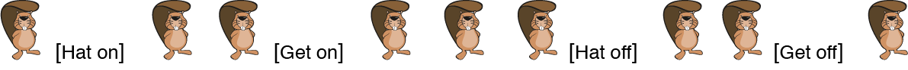

海狸班的同學列隊成一排（如下圖），在隊伍中還放了四個標記：「Hat on」、「Hat off」、「Get on」、「Get off」。 只有在「Hat on」和「Hat off」標記中間的海狸可以借到帽子，另外只有在「Get on」和「Get off」標記中間的海狸可以借到腳踏車。

有一些海狸只能借到帽子或腳踏車其中一樣東西而已。請你算算看，這樣的海狸一共有幾隻？（請僅填入數字。作答範例： 1 ）
尚有 15 題未作答